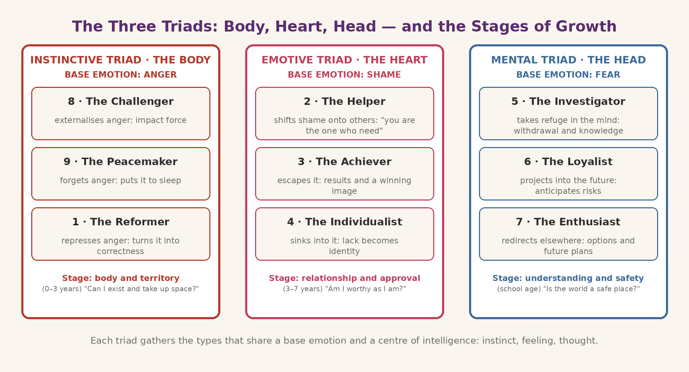

the wings Journey marker: "how it moves" — wings, stress and integration, triads. (Step 5 of 5)
the nine types gather into three triads — instinctive (8, 9, 1), emotive (2, 3, 4), mental (5, 6, 7) — each with a dominant mode of perceiving the world.Triads and Types: basic type and inner dynamics
Not a quiz, but a mirror
The first step is honest self-observation: recognising which strategy dominates — which passion takes hold of you under pressure, which mental script you repeat, which wound you keep protecting. Questionnaires can help, but the decisive test is inner resonance: reading a type and recognising yourself "with a hint of embarrassment" is generally the most reliable sign.
A centre of gravity, many dynamics
Each triad gathers three types that share the same dominant centre — body, heart or head — and therefore the same fundamental emotion. Each type, however, manages that emotion with a different strategy.The instinctive or body triad — Types 8, 9 and 1 (anger)
Base emotion: anger. Central theme: control — of one’s space, of one’s reality. The body is the centre of gravity: these types feel before they reason, and their common problem is disconnection from primary needs (rest, support, tenderness).- Type 8 — The Challenger:
- externalises anger: expresses it directly, converting it into impact force.Type 9 — The Peacemaker: forgets anger: puts it to sleep so as not to disturb harmony.
- Type 1 — The Reformer:represses anger: turns it into resentment, self-discipline and a search for correctness. The emotive or heart triad — Types 2, 3 and 4 (shame)
- Base emotion: shame — the feeling that one’s worth cannot withstand another’s gaze. Central theme: identity and acceptance. The common problem is disconnection from authentic feelings, replaced by a self-image built to be pleasing.Type 2 — the Helper: shifts shame onto others: "I am not the one who needs — you are."
- Type 3 — the Achiever:escapes shame: flees from feelings into action, results, a winning image.
The meaning of the arrows. Each type is connected to two points of the circle: the arrow followed in the direction of the arrow indicates the growth direction — the type "rises" towards its integration point and takes on its best resources; followed in the opposite direction it indicates the fall under stress — the type "slides" towards its disintegration point and takes on its worst rigidities. A useful note: in some traditions the symbol is drawn with the arrowheads pointing the other way (towards stress); the images on this site follow the convention in which the arrow indicates growth — the movement described is the same.
The three triads nei dettaglio
The basic type is not the whole person. The other eight positions of the symbol remain active and interact with the dominant type according to precise dynamics:
Each triad gathers three types that share the same dominant centre — body, heart or head — and therefore the same fundamental emotion. Each type, however, manages that emotion with a different strategy.
The instinctive or body triad — Types 8, 9 and 1 (anger)
- Base emotion: anger. Central theme: control — of one’s space, of one’s reality. The body is the centre of gravity: these types feel before they reason, and their common problem is disconnection from primary needs (rest, support, tenderness). Type 8 — The Challenger:
- externalises anger: expresses it directly, converting it into impact force. Type 9 — The Peacemaker:
- forgets anger: puts it to sleep so as not to disturb harmony. Type 1 — The Reformer:
represses anger: turns it into resentment, self-discipline and a search for correctness.
The emotive or heart triad — Types 2, 3 and 4 (shame)
- Base emotion: shame — the feeling that one’s worth cannot withstand another’s gaze. Central theme: identity and acceptance. The common problem is disconnection from authentic feelings, replaced by a self-image built to be pleasing. Type 2 — the Helper:
- shifts shame onto others: "I am not the one who needs — you are." Type 3 — the Achiever:
- escapes shame: flees from feelings into action, results, a winning image. Type 4 — the Individualist:
sinks into shame: converts it into a sense of lack and difference, which feeds introspection and creativity.
The mental or head triad — Types 5, 6 and 7 (fear)
- Base emotion: fear. Central theme: safety — finding stable support in a world perceived as uncertain or hostile. The common problem is disconnection from inner guidance, replaced by endless anticipation. Type 5 — the Investigator:
- takes refuge in the mind: withdraws from action to observe, understand, accumulate knowledge. Type 6 — the Loyalist:
- projects the mind into the future: anticipates scenarios, seeks confirmations and guarantees. Type 7 — the Enthusiast:

redirects the mind elsewhere: flees anxiety towards new options, plans and possibilities.
Triads and the stages of the child’s growth: a parallel
- According to this reading, the three triads mirror three needs that appear in sequence during growth, from birth onwards — though with overlaps and individual variations: Instinctive stage (triad 8-9-1): the body and territory.
- From the first months to about age 3: the child builds the relationship with the world through the body — nourishment, boundaries, space. The question is "can I exist and take up space?". Emotive stage (triad 2-3-4): relationship and approval.
- From about 3 to 7 years: the child discovers the gaze of others and learns that love and worth may depend on how one appears. The question is "am I worthy as I am?". Mental stage (triad 5-6-7): understanding and safety.
From school age onwards: with cognitive development the child faces the world with the mind. The question is "is the world a safe place? Can I trust?".
Why knowing your triad changes the inner work
Your basic type tells how you defend yourself; your triad tells what you are defending. An 8, a 9 and a 1 do opposite things, but they fight the same war (anger and control). We leave you this double key: when you recognise the strategy (the type) and the emotion that fuels it (the triad — anger, shame or fear), you know exactly what to watch when you catch yourself acting "on autopilot". And having already walked the path, you now also understand why your type "rises" precisely towards that point of the circle.